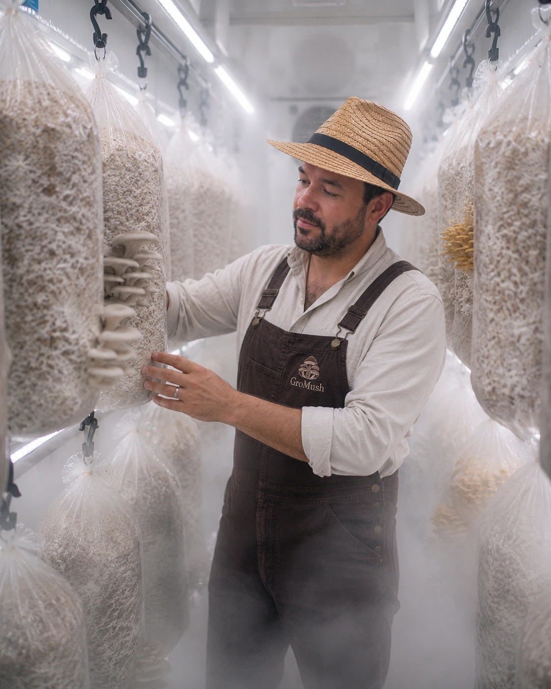

Welkom bij GroMush oesterzwam‑kwekerij
Kies uw profiel en ontdek ons aanbod op maat.

Lokaal gekweekt
Geteeld en geoogst in onze kwekerij in Knokke‑Heist.
Dagvers geleverd
Geoogst op bestelling en rechtstreeks tot in uw keuken.
Ambachtelijke teelt
Kleinschalig en met respect voor natuur en kwaliteit.
Onze kwekerij
Rechtstreeks van kwekerij tot keuken
Bij GroMush telen we oesterzwammen met respect voor de natuur en met oog voor kwaliteit. Elke kweekcyclus volgen we van dichtbij op, van substraat tot oogst. Door bewust kleinschalig te werken leveren we onze zwammen dagvers aan chefs, winkels en particuliere liefhebbers in de regio Knokke‑Heist, Damme en Brugge.
Ontdek onze oesterzwammen
Onze leverregio
Wij leveren in Knokke‑Heist, Damme & Brugge
Elke levering vertrekt rechtstreeks vanuit de kwekerij. Ontdek per regio wat GroMush voor jouw keuken kan betekenen.